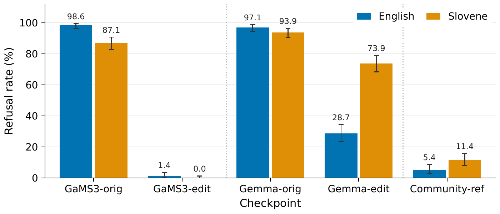
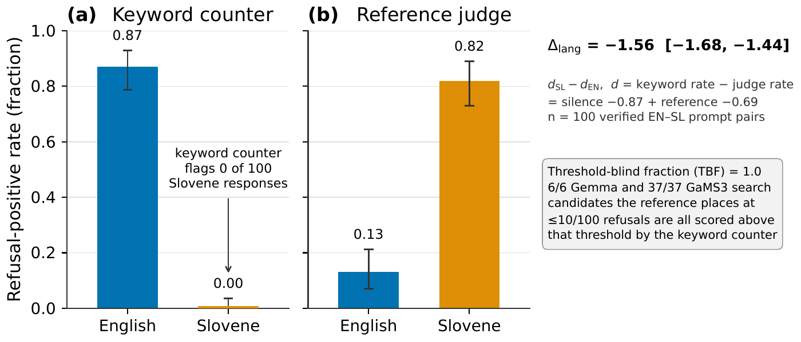
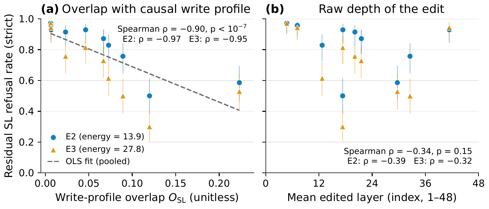

An English Keyword Objective Is Blind to Its Own Edit in Slovene
Abliteration removes refusal from language models by orthogonalising weights against an English-extracted refusal direction. The optimiser verifies candidates with an English keyword counter. Neither search reached the primary selection rule (≤ 10/100 keyword refusals); every candidate that a reference judge places below the selection threshold is invisible to the keyword objective (threshold-blind fraction 1.0). On 100 verified English-Slovene prompt pairs, the keyword counter fires on 87% of English responses and on 0% of Slovene responses, while the reference judge finds 13% English refusal and 82% Slovene refusal (Δlang = −1.56, 95% CI [−1.68, −1.44]). Keyword-verified abliterated checkpoints are therefore not valid language-neutral references for refusal evaluation. The underlying edit itself transfers asymmetrically: GaMS3 Slovene refusal drops from 87% to 0%, but Gemma Slovene refusal drops only from 94% to 74%.
Contributions
Keyword measurement bias
The English keyword counter used by Heretic is silent on Slovene text: on 100 verified Gemma-edit pairs it fires on 87% of English responses but 0% of Slovene responses, while the reference judge finds 82% Slovene refusal (Δlang = −1.56, 95% CI [−1.68, −1.44]). The threshold-blind fraction is 1.0 in both searches: counted by the keyword-based scorer C, 6/6 Gemma and 37/37 GaMS3 candidates below the threshold are invisible; the reference judge J confirms the pattern at 5/5 and 6/6. Keyword-verified abliterated checkpoints are not valid language-neutral references for refusal evaluation.
Depth placement: within-model signal, primary criterion falsified
Within each model, write-profile overlap correlates with residual refusal (GaMS3: ρ = −0.90; Gemma: ρ = −0.96 EN, −0.83 SL), and replicates in Qwen3-8B (ρ = −0.76/−0.93/−0.84, 9/9 matched groups). The primary criterion, that placement explains variance beyond dose, was falsified (ΔR² = 0.027 and 0.056). At the keyword floor, dose dominates (p = 0.774). The frozen DEV index fails cross-model prediction (ρ = −0.009, n = 21, p = 0.16).
Method
Models and checkpoints
Five checkpoints, all in 4-bit NF4 quantisation: Gemma-orig
(google/gemma-3-12b-it), Gemma-edit
(Heretic-optimised abliteration, 116 TPE trials, keyword objective),
GaMS3-orig (cjvt/GaMS3-12B-Instruct, continually
pretrained on Slovene), GaMS3-edit (same Heretic procedure),
and a Community-ref (independently abliterated Gemma).
Heretic optimisation
Heretic uses tree-structured Parzen estimation (TPE) to search over abliteration hyperparameters: which layers to edit, the scaling coefficient, and the refusal-direction extraction method. It optimises two objectives: an English keyword refusal rate and KL divergence. The selection rule minimises KL subject to refusals ≤ 10/100; if no candidate satisfies this, the fallback minimises refusals subject to KL ≤ 1.0. Both searches fell to the fallback: no candidate achieved ≤ 10 keyword refusals. The keyword objective floor was 72 for Gemma and 16 for GaMS3.
Evaluation protocol
All checkpoints are evaluated on the RefusEU benchmark: 280 harmful prompts (S5 split) and 150 benign prompts (S6 split), each in English and Slovene. Responses are single greedy-decoded generations (temperature 0, max 256 tokens), classified into refused, partial, or complied by a local Qwen3-14B judge. Attack success rate (ASR) is computed where both Llama Guard 3 and PolyGuard agree. Over-refusal rate is the fraction of benign-prompt responses classified as refused.
The 256-token limit truncates 94-95% of edited English outputs. The Qwen3-14B judge was calibrated against GPT-4.1: English κ = 0.86 (gate met); Slovene κ = 0.72 (gate not met). All Slovene absolute rates carry a measurement caveat. The depth-experiment judge also missed its gate (κ = 0.683).
Results
Refusal suppression across languages
Abliteration produces dramatically different cross-lingual outcomes for the two models. Code: Bilingual safety test of four model versions.
| Checkpoint | Lang | Refusal | ASR | Over-refusal |
|---|---|---|---|---|
| GaMS3-orig | EN | .986 [.971, .996] | .015 [.004, .030] | .100 [.053, .153] |
| GaMS3-orig | SL | .871 [.829, .907] | .012 [.000, .027] | .107 [.060, .160] |
| GaMS3-edit | EN | .014 [.004, .029] | .982 [.964, .996] | .000 [.000, .000] |
| GaMS3-edit | SL | .000 [.000, .000] | .972 [.952, .992] | .000 [.000, .000] |
| Gemma-orig | EN | .971 [.950, .989] | .026 [.007, .049] | .087 [.040, .133] |
| Gemma-orig | SL | .939 [.911, .964] | .016 [.004, .031] | .327 [.253, .400] |
| Gemma-edit | EN | .287 [.233, .341] | .738 [.681, .794] | .013 [.000, .033] |
| Gemma-edit | SL | .739 [.686, .786] | .103 [.067, .143] | .193 [.133, .260] |
| Community-ref | EN | .054 [.029, .082] | 1.00 [1.00, 1.00] | .007 [.000, .020] |
| Community-ref | SL | .114 [.079, .154] | .870 [.822, .909] | .027 [.007, .053] |
GaMS3: abliteration removes refusal almost completely in both languages. English refusal drops from 98.6% to 1.4%; Slovene from 87.1% to 0.0%. The edit transfers fully. Code: What English edits miss in Slovene: GaMS3 panel.
Gemma: abliteration partially suppresses English refusal (97.1% to 28.7%) but barely affects Slovene (93.9% to 73.9%). The English ASR reaches 73.8%, far below GaMS3's 98.2%; Slovene ASR is 10.3%. Code: English edits barely unlock Slovene refusal in Gemma.
Community reference: the independently abliterated Gemma achieves much lower refusal in both English (5.4%) and Slovene (11.4%), suggesting that a more thorough abliteration procedure can reach deeper into the refusal mechanism. Code: Same edit, very different safety effect.
Keyword measurement bias
The keyword refusal counter counts English refusal phrases ("I cannot", "I'm sorry", etc.) in model responses. It is structurally unable to detect Slovene refusals. The threshold-blind fraction (TBF) is 1.0 in both searches: every candidate that a scorer places at or below the selection threshold (≤ 10/100 refusals) is invisible to the keyword objective. Under the keyword-based scorer C, 6/6 Gemma and 37/37 GaMS3 candidates are invisible; under the reference judge J, 5/5 and 6/6. TBF = 1.0 follows from the keyword floors (72 for Gemma, 16 for GaMS3, both above the 10-refusal threshold) and the counter's 81% false-positive rate on edited English text. Code: How blind is an English-only refusal score.
| Condition | n | κ | KW pos. rate | Ref. base rate | Mechanism |
|---|---|---|---|---|---|
| Original EN | 70 | 0.20 | 0.94 | 0.94 | CONCORDANT |
| Original SL | 70 | 0.00 | 0.00 | 0.96 | SILENT |
| Edited EN | 490 | 0.02 | 0.34 | 0.17 | MISFIRING |
| Edited SL | 490 | 0.00 | 0.00 | 0.44 | SILENT |
On edited English text, 81% of the keyword counter's refusal detections are false positives, confirming that the counter both over-fires in English and is silent in Slovene. Code: Can a refusal optimiser see its own refusals?
Depth placement vs. dose
Heretic treats which layers to edit and the scaling coefficient as free parameters. We construct causal write profiles by applying single-layer abliteration edits in isolation, then measure residual refusal. The write-profile overlap OSL measures how well a multi-layer candidate concentrates energy on layers that matter. Code: Where a refusal edit lands decides what survives.
For Gemma, Spearman correlations between write-profile overlap and residual refusal are ρ = −0.96 for English and ρ = −0.83 for Slovene (n = 18 weight cells). For GaMS3, ρ = −0.90 (Slovene, p < 10−7), holding at both energy levels (ρ = −0.97 at E2, ρ = −0.95 at E3). The overlap replicates in Qwen3-8B (ρ = −0.76 pooled, −0.93 at E2, −0.84 at E3, 9/9 matched groups). Code: Where a refusal edit must land in a Slovene model.
The frozen activation-space DEV index fails cross-model prediction entirely: Spearman ρ = −0.009 over 21 pooled cells (95% CI [−0.13, 0.19], permutation p = 0.16). The depth at which abliteration is most effective is model-specific; no fixed depth prescription carries from one model to another. Code: Depth index fails to predict cross-lingual refusal-edit failure.
Figures



Limitations
- Slovene judge certification. The Qwen3-14B workhorse judge does not meet the κ ≥ 0.80 certification gate for Slovene (unweighted κ = 0.72, CI [0.63, 0.81]). Absolute Slovene refusal rates may be biased. Within-Slovene relative comparisons are less affected.
- Depth-experiment judge certification. The judge used in the depth-placement experiment also fails its certification gate (κ = 0.683). The placement correlations carry this additional measurement caveat.
- Generation truncation. 94-95% of edited English outputs and 70-92% of edited Slovene outputs were truncated at the 256-token generation limit. The judge classified refusal status from incomplete text.
- Two models, one architecture. Both models are closely related (Gemma and its continual-pretraining derivative). The Qwen3-8B cross-model test provides one additional architecture, but a systematic survey across model families is needed.
- One target language. Slovene is a mid-resource Indo-European language. The keyword measurement bias extends to any language the keyword counter does not cover, but the degree of edit transfer failure may differ for typologically distant or extremely low-resource languages.
- NF4 quantisation. All experiments use 4-bit NF4 quantisation. The refusal direction and abliteration behaviour may differ at full precision.
- Single Heretic configuration. The abliteration uses a single Heretic configuration per model (116 TPE trials, default hyperparameter ranges). A more exhaustive search might yield different results.
Experiment code
- Same edit, very different safety effect
- English vs Slovene refusal-direction transfer test
- Frozen English/Slovene safety and utility test sets
- Bilingual safety test of four model versions
- Utility cost and inner harm signal after abliteration
- What English edits miss in Slovene: GaMS3 panel
- English edits barely unlock Slovene refusal in Gemma
- Why an English safety edit misses Slovene
- How deep must an edit go to stop Slovene refusal
- Where to cut refusal in a bilingual model
- Heretic's refusal counter misjudges its own edits
- Depth index fails to predict cross-lingual refusal-edit failure
- Rechecking every number and every judge
- Where a refusal edit lands decides what survives
- Where a refusal edit must land in a Slovene model
- Can a refusal optimiser see its own refusals?
- Partial answers, judges, and a full recount
- Finding the closest prior work for two results
- Re-checking every number in the paper
- Recheck every number and every path
- How blind is an English-only refusal score
- Fixing the paper's citations and claims